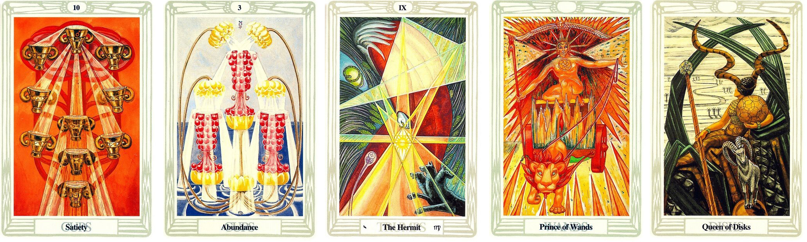

問題：近期整體的狀況

抽出來的牌面順序：
聖杯十 聖杯三 隱士 權杖王子 圓盤皇后
解牌分析
牌面整體能量狀況
不容易將自己的想法整合分享給他人 但會吸收學習他人的經驗
會聽他人提供的意見、想法 但還是偏好堅持自己的想法
第一張牌
過去發生一些事情 讓你看清楚事實的真相是什麼 被隱藏的真相被揭開 也有著看懂過往的傷痛是因為什麼
意思就是你本來不太知道為什麼會發生這些莫名其妙的事情 突然經歷了一些事後 你理解了原因 當初是因為不懂、沒有經歷過、沒有經驗 所以才導致這些事情發生 也代表著那段的經歷 讓你提升 要迎接下一個階段的開始
第二張牌
因為過往的那些經歷 讓你知道 人生不管發生什麼事情 你必須一直向前邁進
而且你在跟人溝通上 會比較懂得包容其他人的想法 但不會因為他人說的話動搖自己的信念
第三張牌
現在就在沉寂、反思、觀察 因為過往的經歷 加上你聽了很多人的想法 加上自己的信念 現在就是反思、評估 我下一步應該怎麼走？ 應該怎麼做？
現在的你沒有太大的自信 會自我懷疑 這樣是好的嗎？ 覺得自己很渺小
但沒有看見自己身上的光 其實足以引導你邁步向前了 你處在這種狀態有一段時間了
第四張牌
近期會遇到一些人或者你本身觀察後的反思 會激起你的積極性 邁向你自己的方向前進 就是激發你的鬥志、衝刺 不會思考太多 就單純的去做就對了
意思就是說 以前你比較溫和、被動 遇到這些人後 你會變得更加積極及主動
最後一張牌
最後會遇到一些人或者你本身觀察後的反思 會讓你看到過去 你怎麼一路走到現在的 因為過往的那些經驗 使你變得成熟、穩重 懂得拿捏分寸
最終的答案
這一路走來很辛苦你也自我懷疑了很久 最後找到了屬於自己的答案
你已經變得跟過去不一樣了 不需要跟其他人比較 會慢慢凸顯你的優勢出來的